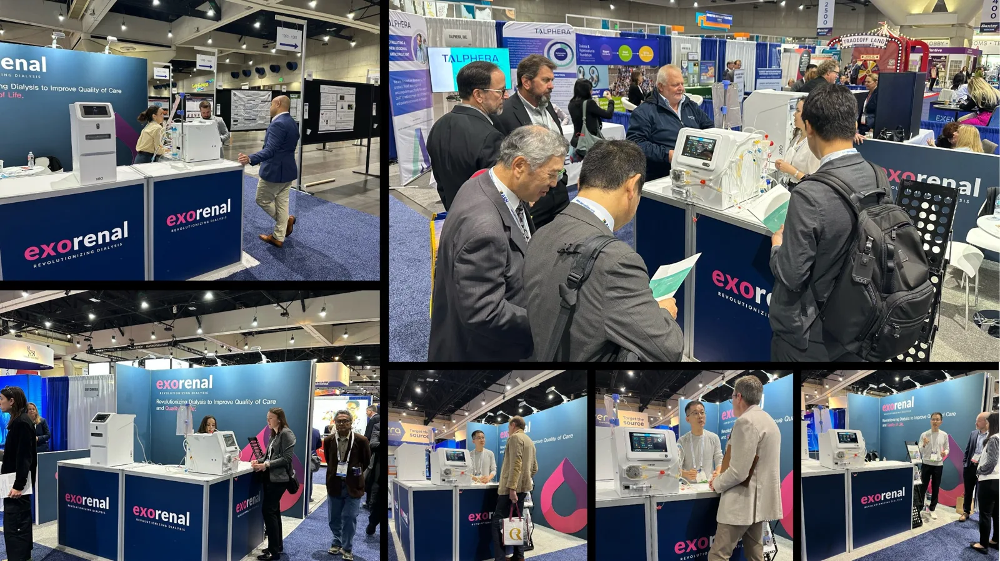
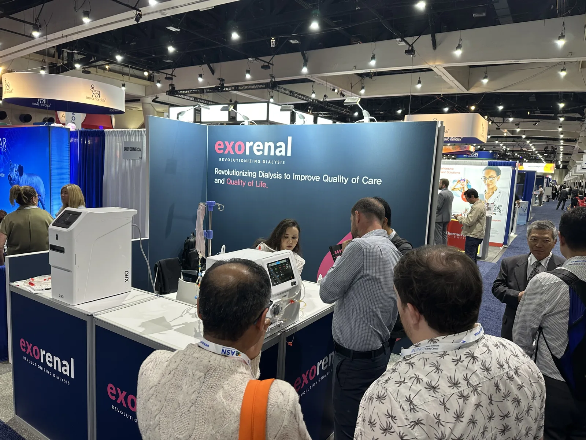
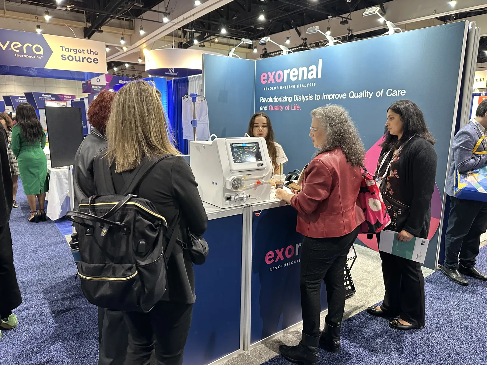
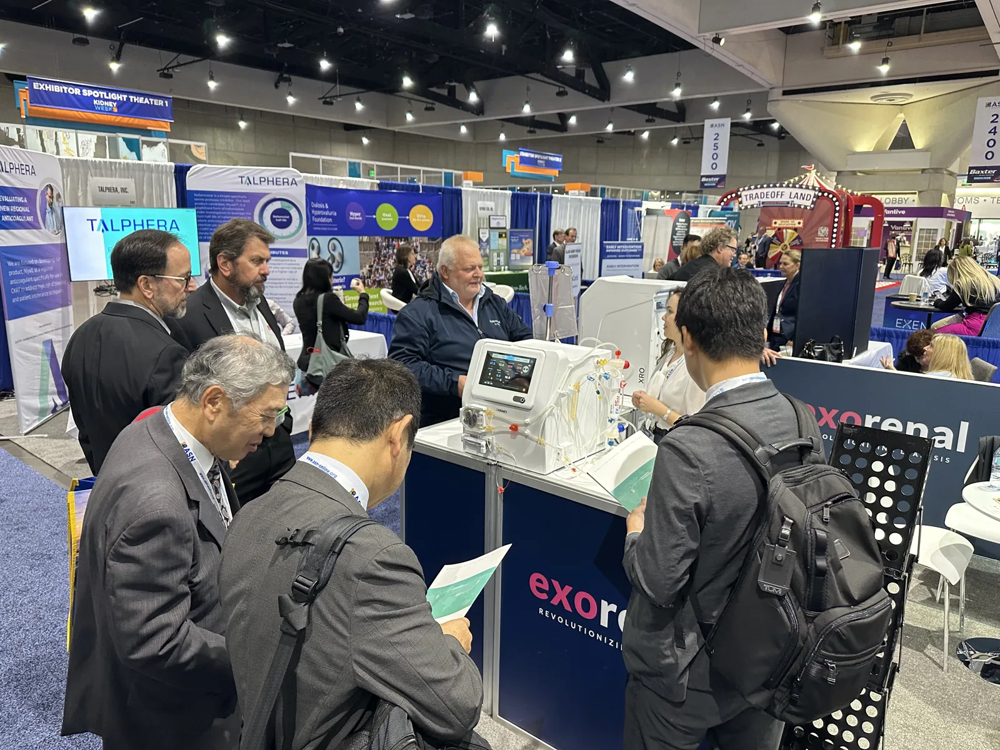
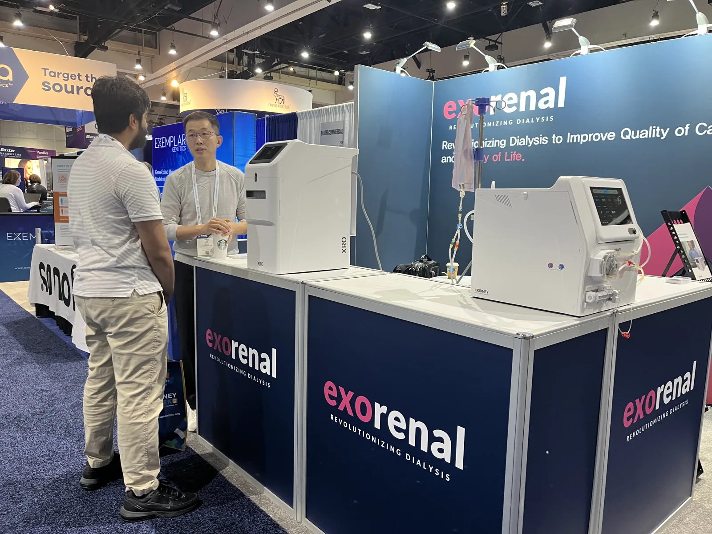
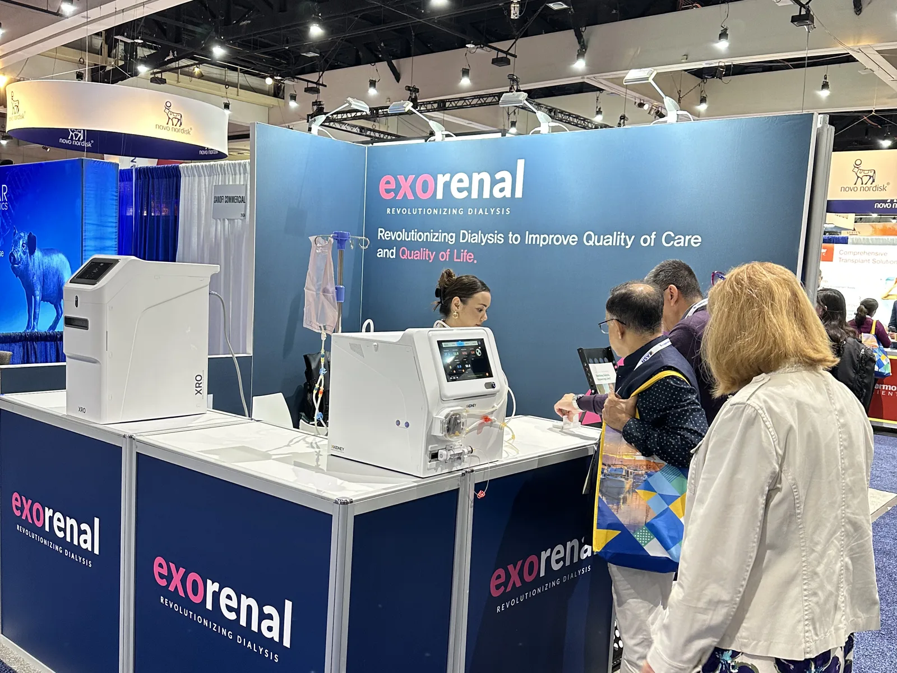
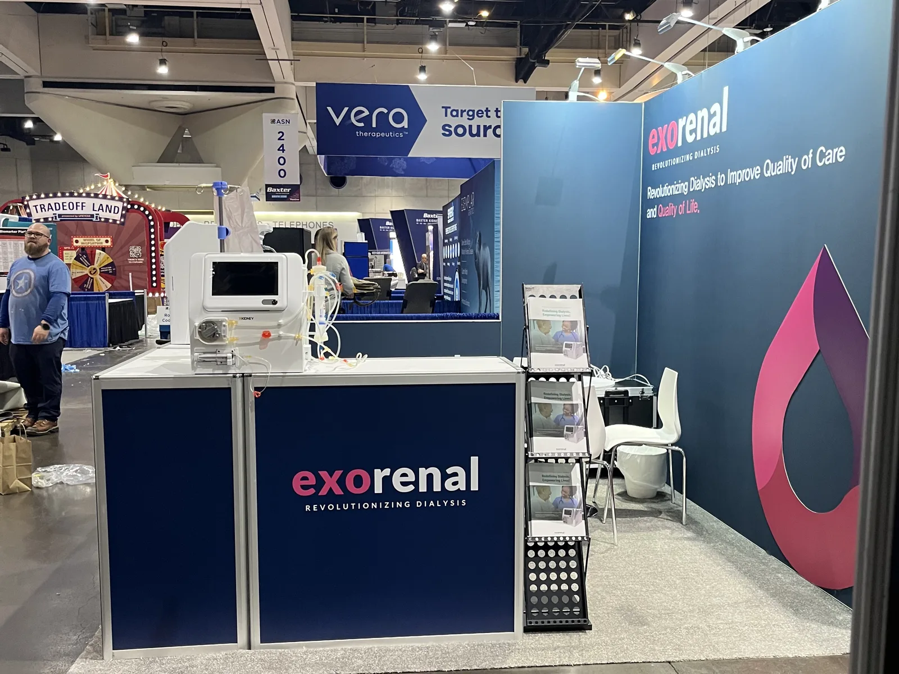

ASN Kidney Week 2024, San Diego.
We showed XKIDNEY and XRO at the American Society of Nephrology's annual meeting.
- Exhibit hall
- Oct 24–26, 2024
- Venue
- San Diego, USA
- Meeting
- American Society of Nephrology

Exorenal exhibited at ASN Kidney Week 2024, the American Society of Nephrology's annual meeting, held in San Diego in October 2024. Nephrologists, dialysis nurses and researchers stopped by to see XKIDNEY and XRO up close.
Around the same time we released a research paper evaluating XKIDNEY, comparing waste removal and fluid-balance accuracy with a conventional in-center machine in lab testing.
Paper: Evaluation of a Functional Portable Hemodialysis Machine, XKIDNEYbioRxiv preprint · Oct 2024 This year: meet us in DenverASN Kidney Week 2026 · Oct 22–24




